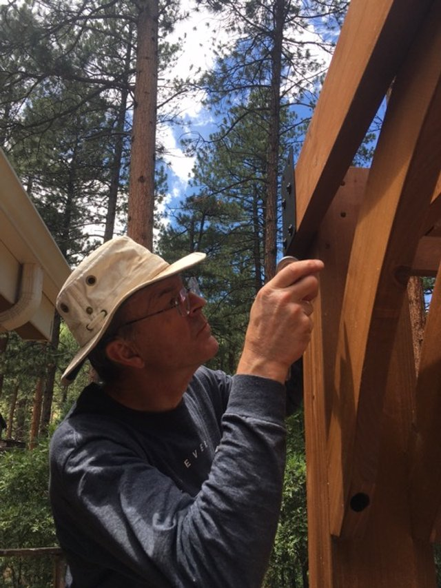
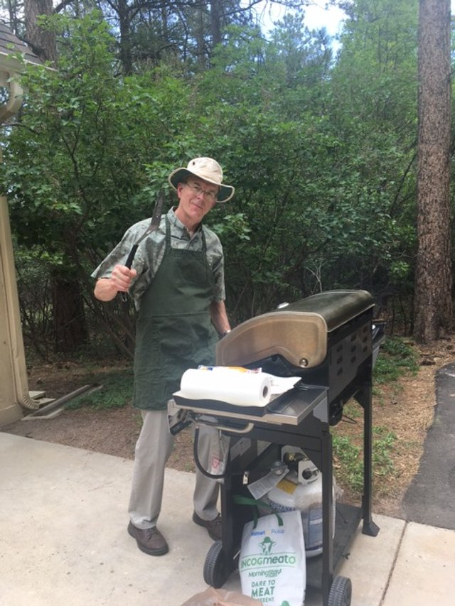
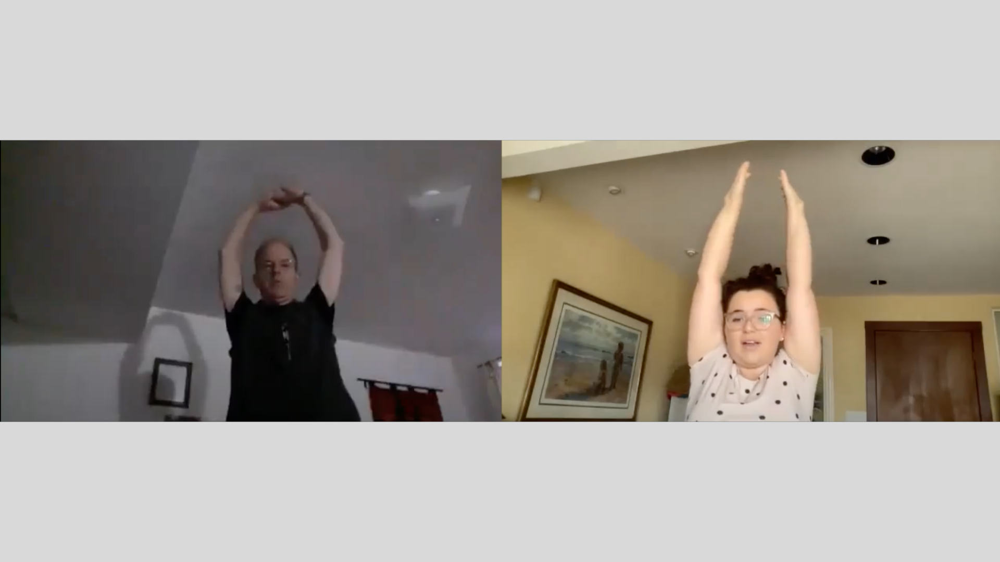
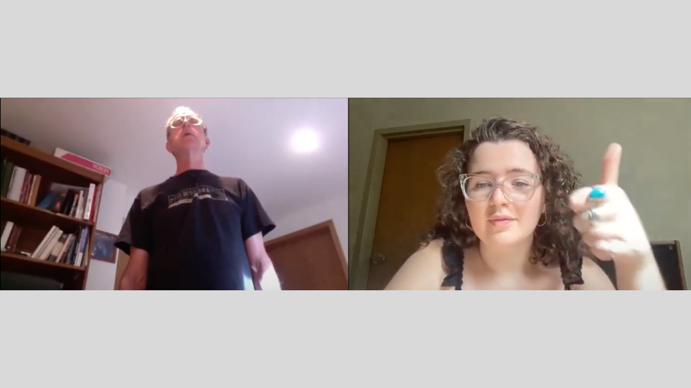

“I was very happy, actually felt warm, when it became apparent to me that I could sing musically”
“Part of the joy in our lessons also came from Eric’s trust in me and comfort with himself. I was constantly asking him to make silly sounds and do all kinds of exercises with his body, and every time Eric dove into the deep end and was incredibly willing to try anything without inhibition.”
Eric Johnson
Here, My Voice Participant | Former Engineer
I’m Eric Johnson, 67 years old, retired from an engineering career (dynamic loads analysis of launch vehicles and spacecraft and managing people doing similar work).
My interests and skills led me to an engineering / engineering management career, but I’ve always enjoyed listening to and making music. I sang in public school, university, church, and community choirs from middle school onwards through the mid- to late-1980s. I began singing with small a cappella vocal jazz and “doo-wop” ensembles in college and continued afterward until my hearing decline prevented further participation, from about 1996 on.

Madeleine Lew
Here, My Voice Teacher | Master of Musical Arts, Vocal Arts at USC Thornton School of Music
Eric’s Experience
Madeleine was always kind and helpful in our lessons. We worked on two songs, one I picked (Paul Simon’s “Kathy’s Song”) and one she suggested (Bob Dylan’s “Forever Young”). She was always positive and helpful, and offered many suggestions for improvement. We began each lesson with some stretches and vocal exercises to prepare for singing – I’ve had very little of that sort of instruction in all my years of choral and ensemble singing, and certainly had never had a voice lesson. (I had done some similar stretches and vocal exercises when I participated in the CI Choir a year or two ago, but never anywhere else prior to that). It was a pleasure to have her as my teacher.
I’m proud that with Madeleine’s help I was able to sing two songs passably well. It has been over two decades since I could say that.
I was very happy, actually felt warm, when it became apparent to me that I could sing musically, that Madeleine wasn’t lying to me about how good it sounded and that I was making some improvement. Music was always powerfully emotional for me, and I again felt some of that emotional response I used to have. It was wonderful.
I’d like to think I’ve improved my ability to use my singing voice effectively, with Madeleine’s instruction and help. I believe I have more confidence in my voice, and may be willing to risk ridicule by using it in the presence of others. I think these lessons moved my process of re-engaging with music along faster than it otherwise would have moved – that process started with the complete dislike of music shortly after implantation, to having some enjoyment in listening, to having some enjoyment in making music. I hope the enjoyment continues to increase


Madeleine’s Experience
In our lessons my main technical focuses have been helping Eric find more vocal freedom and improve his pitch accuracy. In each lesson, before singing, we spent 5-15 minutes stretching and opening our bodies up. These exercises consisted of varying physical activities. At the beginning of each of our lessons I would check in with Eric briefly, talk to him about how he was feeling that day, and get a sense of his needs before beginning.
Our physical work included yoga stretches, breathwork in different positions, and on some days we expanded on our breathwork by using a straw in water.
The songs we chose were also both songs that resonate strongly with Eric, and our main goal was to share a message from his heart through his singing. This resulted in lots of laughter and silliness in lessons. Part of the joy in our lessons also came from Eric’s trust in me and comfort with himself. I was constantly asking him to make silly sounds and do all kinds of exercises with his body, and every time Eric dove into the deep end and was incredibly willing to try anything without inhibition.
Working with Eric was extremely rewarding! Eric helped me improve in my communication skills and find ways to encourage him to make specific sounds in ways that I had never expected would make sense.
As a performing and teaching artist, it can often feel like our work isn’t very worthwhile in the scheme of life. My work with Eric and whatever I was able to offer him that helped him express himself, but that also helped improve his comfort and ability to hear music meant so much to me.

